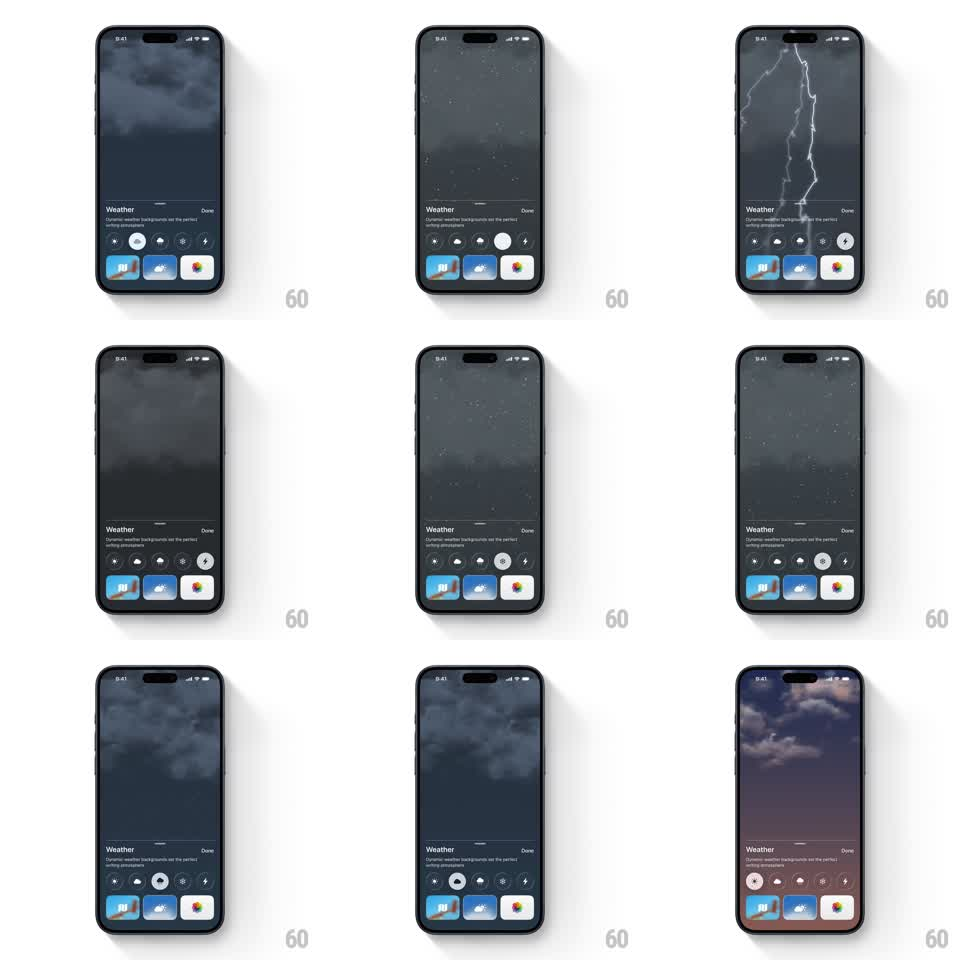

Media
Frame-by-frame

Rebuild this animation 1:1: Ben Journal's weather toggle - tapping weather icons in the bottom sheet morphs the entire screen into a live weather scene, from sunset clouds to storm to falling snow.

Rebuild this animation 1:1: Ben Journal's weather toggle - tapping weather icons in the bottom sheet morphs the entire screen into a live weather scene, from sunset clouds to storm to falling snow. ## Integration Integration: stack-agnostic spec - springs given as stiffness/damping, timed motions as duration + curve; map every value to your framework and animation library of choice. ## Scene Ben Journal, full-bleed animated weather scene behind everything (sunset gradient with clouds, dark storm front, or night snow). Bottom sheet: "Weather" title, "Dynamic weather backgrounds set the perfect writing atmosphere", a Done button, a row of circular weather icons (stars, rain, cloud, sun, moon, lightning), and three background thumbnails. ## Motion spec Pattern: full-screen weather scene transition driven by an icon toggle. - Tap a weather icon: the tapped icon fills with its active treatment (scale 1 -> 1.15 with spring ~400/15, fill wipes in 200ms) while the previous icon deflates. - The sky transitions over 1.2s: the current scene's clouds drift off with increasing speed (accelerating translate) as the new scene's clouds roll in from the opposite edge; the base gradient crossfades between palettes (sunset mauve -> storm slate -> night navy). - Particles fade in per scene: rain streaks or snow specks spawn over 600ms after the clouds arrive, falling at constant velocity with slight horizontal drift; they fade out over 400ms when switching away. - The tapped scene's thumbnail in the sheet gets a white selection ring (200ms). - The sheet itself never moves - only the sky and the icon states change. ## Calibration - Scene swaps always complete: a tap mid-transition retargets the running transition to the new scene, never restarts from zero. - Keep exactly one particle system alive at a time. ## Reduced motion Sky crossfades (600ms) with static clouds and no particles. ## Don't miss - Clouds have parallax: two layers moving at different speeds, the far layer at 60% speed and 70% opacity. - The status bar time stays legible - the sky dims behind it if needed.